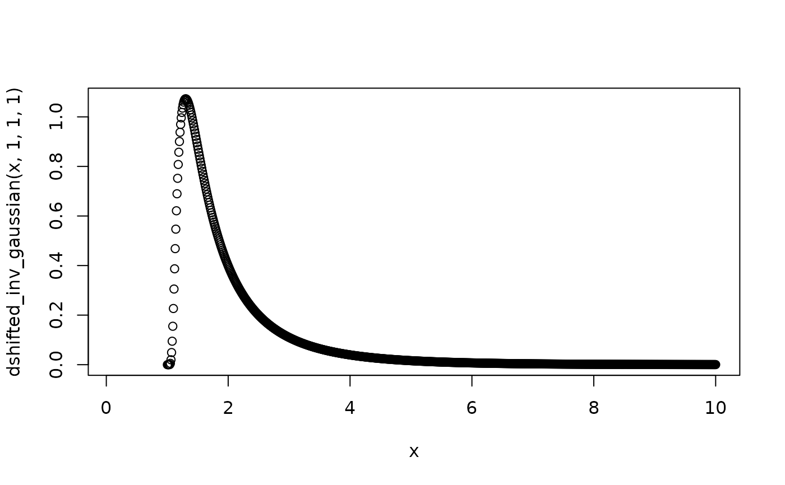

Shifted inverse Gaussian density function
Usage
dshifted_inv_gaussian(x, mu, shape, shift, log = FALSE)
Arguments
- x
Value space of likelihood, x > 0
- mu
Mean , mu > 0
- shape
Shape, shape unbound
- shift
Shift, shift >= 0
- log
logical; if TRUE, log(pdf) is returned
Value
f(x | mu, shape, shift)
Examples
x <- seq(from = 0.1, to = 10, length.out = 1000)
plot(x, dshifted_inv_gaussian(x, 1, 1, 1))
#> Warning: NaNs produced
